Blender · three.js · urban forestry · 2026-10
Where Do the Next 157 Trees Go to Cool the Hottest Blocks the Most?
An urban canopy planner on a synthetic district: $107,912 plants all 157 fitting sites with the greedy optimiser, taking the share of walkway cells that feel 36 °C or hotter on a July afternoon from 60.7 to 44.8 percent by 2050 and canopy cover from 5.7 to 16.0 percent. The hottest block, a residential one with a vulnerability index of 0.90, starts at 70.7 percent hot. The intro grows a seed through the pavement into a district.
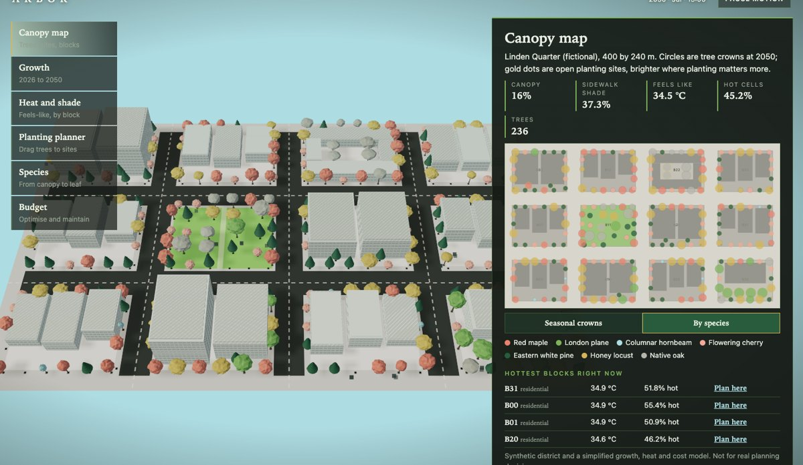
Built from blueprint 10 of a written build book (Advanced Engineering Build Book, Volume VII) as one vertical slice. The district (Linden Quarter), its 88 trees, 265 planting sites, heat and costs are synthetic, and the growth, shade and heat models are simplified. Not for real planning decisions. Species numbers are invented, handbook-order values; temperatures are a model, not a measurement. Not built: PostGIS and a Python optimisation library, MapLibre or deck.gl, real parcel, canopy or heat data, wind, soil volume and root conflicts, dragging the 3D camera, touch testing beyond a phone layout, and a measurement on a physical GPU. The twelve agent roles are committed as Claude Code configuration, but this repository was produced by one session playing them in sequence, not by parallel subagents.
01 — The problem
Canopy planning asks a question that spans decades: where to plant, what, and how many, when a tree is a sapling now, a shade tree in 2050 and a maintenance bill in between. Can one tool show the same trees growing, shading a street by the hour and season, and being chosen under a budget, with the reasons visible?
The book's rule for this volume is that Blender provides modular trees at authored growth stages and the browser controls the growth and the canopy, so the meshes have to be normalised enough to scale to any species and age, and the model underneath has to be fast enough to re-run on every slider move.
02 — What I built
One repository with the asset pipeline, the heat and growth model, and the planner.
- A scripted kit: 11 city modules, four tree archetypes at three growth stages (trunk and crown each), and a branch and a leaf specimen per archetype: 57 named parts, 4,576 triangles in 329 KB, validated by re-import.
- A model: seven species with saturating growth curves, a sun position, shade cast by every crown and building onto a 5 m grid, surface and feels-like temperatures, stormwater, carbon and habitat, a greedy optimiser and a maintenance calendar. A full evaluation takes about 2 ms.
- Six views: canopy map, growth, heat and shade, planting planner, species explorer, budget.
- An API with the book's six endpoints, paging and bounded heat tiles.
03 — How it was built
- 01
Shade as a map, not a shadow map
Each crown projects an ellipse onto the ground, offset away from the sun by its height over the tangent of the sun's elevation and stretched along the sun's direction; buildings cast shade by marching a ray toward the sun. The ground shader darkens with that map, and the same sun position lights the scene. Season matters: a bare maple still stops 12 percent of the sun, a summer maple 85, and a pine 70 all year. At noon the July sun is 66.5 degrees high and the January sun 23.7, so in January the plan's hot cells are 0 percent against 56 in July.
shadow centre = tree base - sunDir * (0.68 h) / tan(elevation) opacity = 0.12 + (1 - transmit - 0.12) * leafFactor(day) - 02
A test caught the sun going the wrong way
A unit test asserting that mornings are east and afternoons are west failed: the azimuth sign was reversed, so before and after noon every shadow fell the wrong way. Noon was right, which is why nothing looked broken. It was fixed with a single sign.
- 03
An optimiser you can argue with
The greedy optimiser plants the open (site, species) pair with the best weighted benefit per dollar, then reduces the heat it has already relieved. It keeps species diverse (no species over 30 percent), only plants a species where its mature crown fits and where overhead lines allow its height, and keeps trees 5 m apart. A higher equity weight shifts planting toward the higher-index blocks. At $40,000 it buys 57 trees and takes hot cells from 60.7 to 49.1 percent; above about $108,000 it has no open site left.
- 04
A tradeoff it does not hide
The starter plan raises stormwater held from 889 to 2,284 cubic metres a year and carbon stored from 123 to 227 tonnes by 2050, but the habitat index falls from 77.1 to 68.6, because the cheap fast species it favours are poorer habitat than the oaks it replaces. Raising the biodiversity weight changes the mix, and a test checks it. Looking after the planted trees takes the district's maintenance from about $3,900 to $10,500 a year.
- 05
A hand-off that stays on the map
The intro's seed, roots and sapling use the real hero site and the starter plan's first tree. The growth wave is one radius that the ground shader and every tree instance both read, so the grey city turns green exactly where the trees grow. The camera rises through the wave to the aerial pose the map uses, and the crowns then switch to the species analytics colours.
04 — Results
The intro: a grey district, a seed, roots, a sapling, growth across the district.
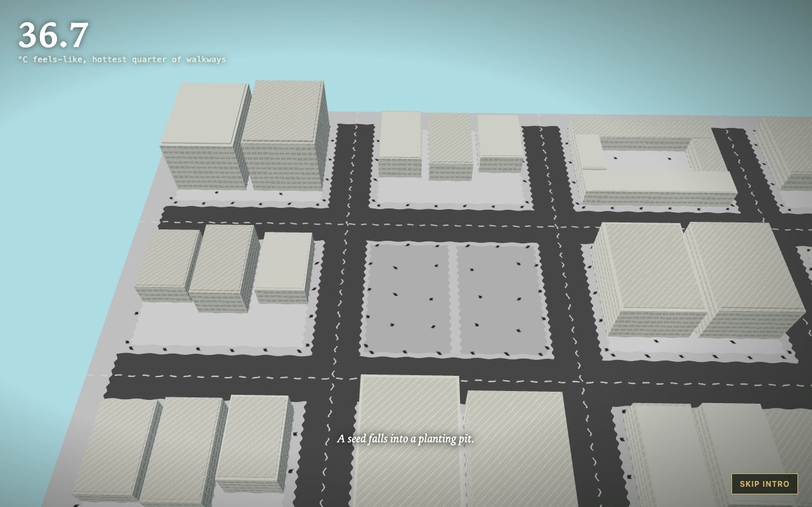
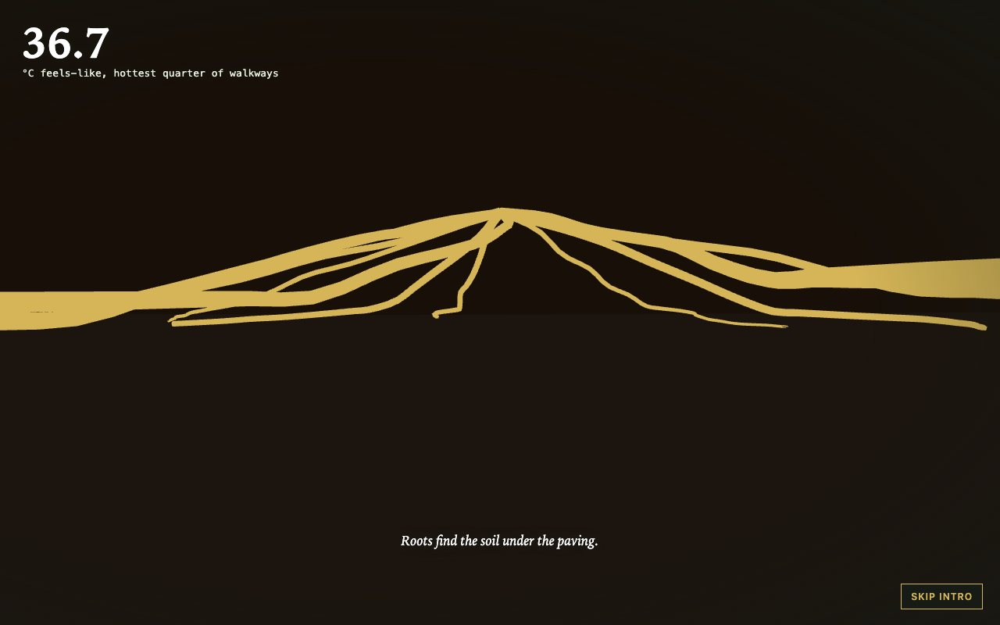
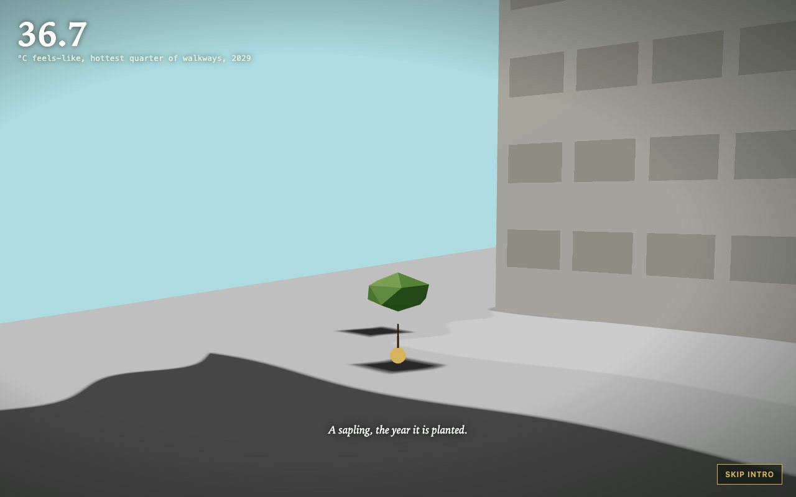
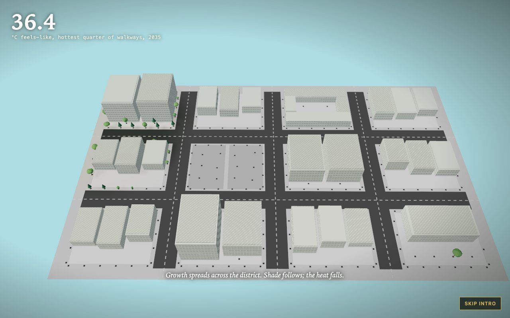
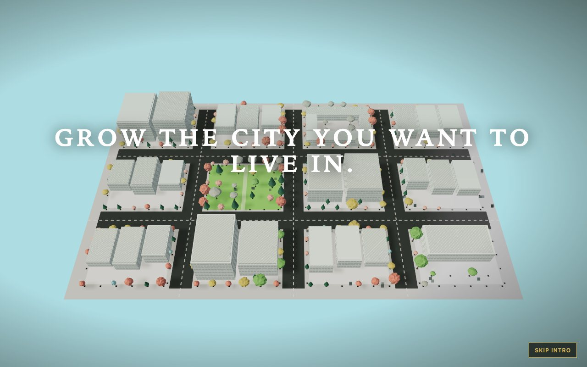
The planner:
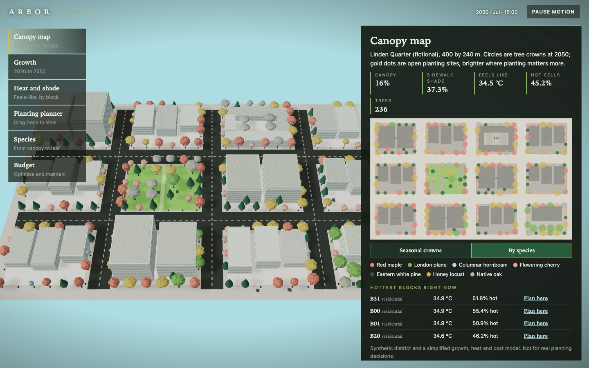
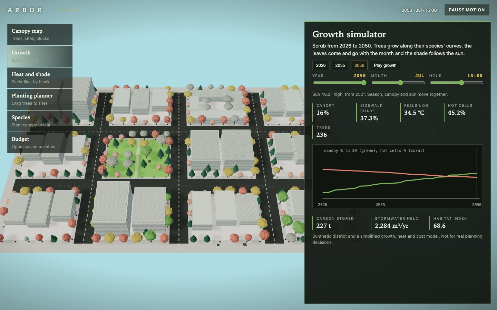
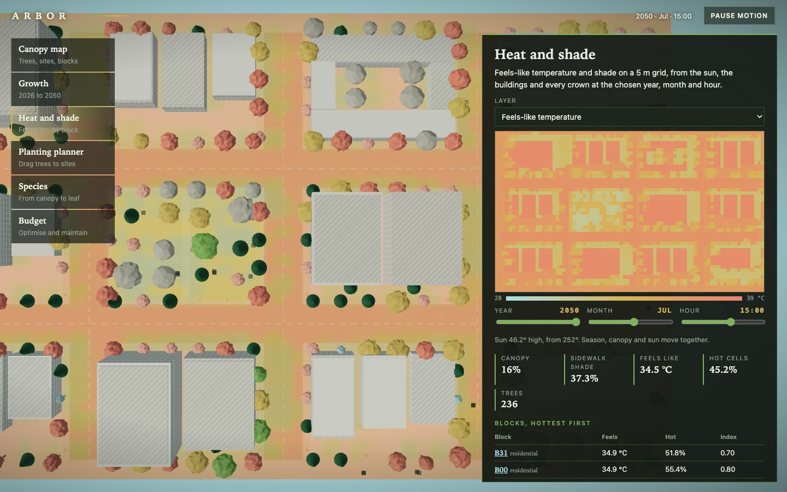
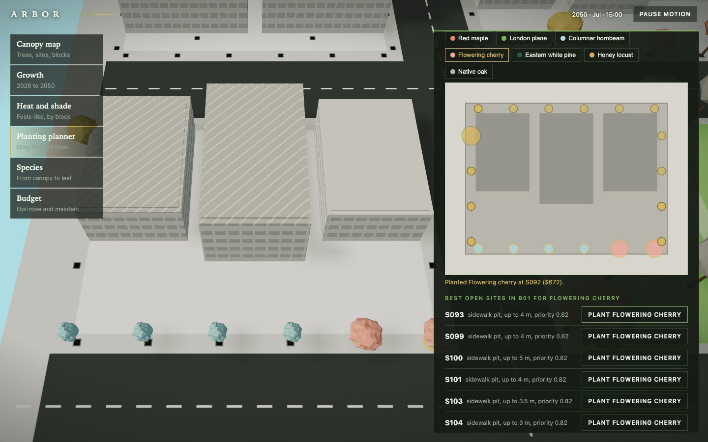
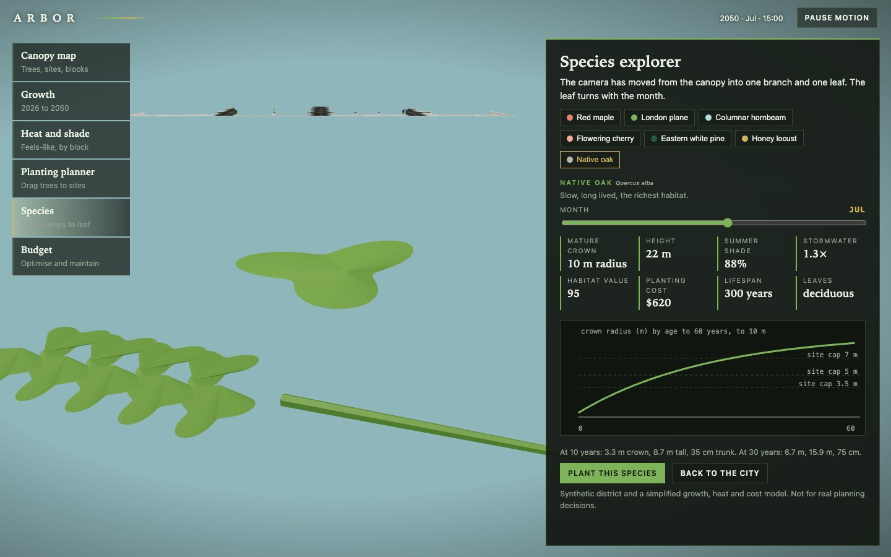
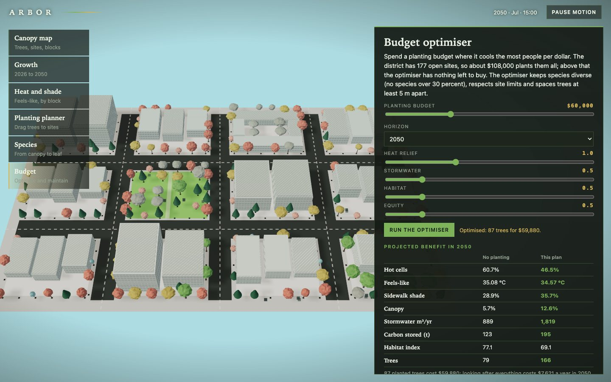
The numbers. Existing: 88 trees (9 flagged for removal), 265 sites, 177 open. In 2026 canopy is 3.6 percent, sidewalk shade 27.7 percent, mean feels-like 35.18 °C, hot cells 62.1 percent. Starter plan, 157 trees, $107,912 (40 cherry, 48 pine, 37 locust, 24 maple, 5 plane, 3 oak): by 2050 canopy 16.0 percent against 5.7 with no planting, sidewalk shade 37.4 against 28.9, hot cells 44.8 against 60.7, feels-like 34.49 against 35.08. Hottest block B01 (residential, index 0.90) 35.46 °C and 70.7 percent hot; the park block 33.58 °C.
Checks. 34 unit and API tests, 25 Playwright tests that passed three times in a row after the last fix, a clean typecheck. They cover the demo script including a drag-and-drop planting, the intro's roots, sapling and wave, species that do not fit a site, season and sun moving together, scenarios saved across a reload, the maintenance calendar, reduced motion, graphics failure, context loss, a phone width and six visual-regression states.
Performance, measured on an Apple M3 Pro with software WebGL, not a GPU. 15 draw calls and 84,426 triangles in the map view at 2050 (236 instanced trees and 29 buildings), 939 KB transferred, a 5.1 s largest contentful paint and a median 33 ms frame (p95 117 ms); there is no 60 fps claim here.
05 — What I'd do next
- Measure on a physical GPU and a phone.
- Replace the synthetic district with parcels and a real tree inventory, keeping the model and tests unchanged.
- Add wind, soil volume and root conflicts, and a proper optimisation solver.
- Let the visitor drag the 3D camera and pick trees directly in the scene.